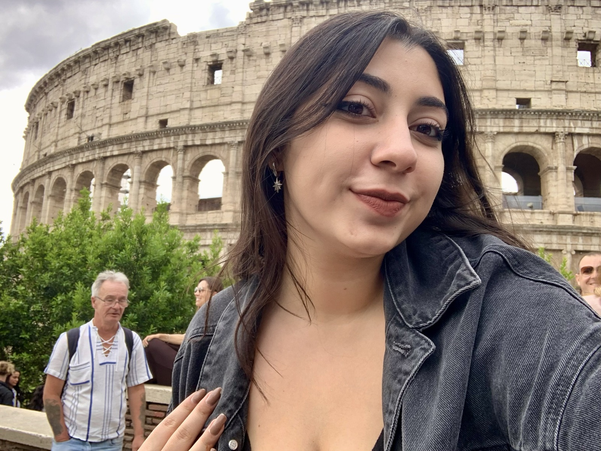
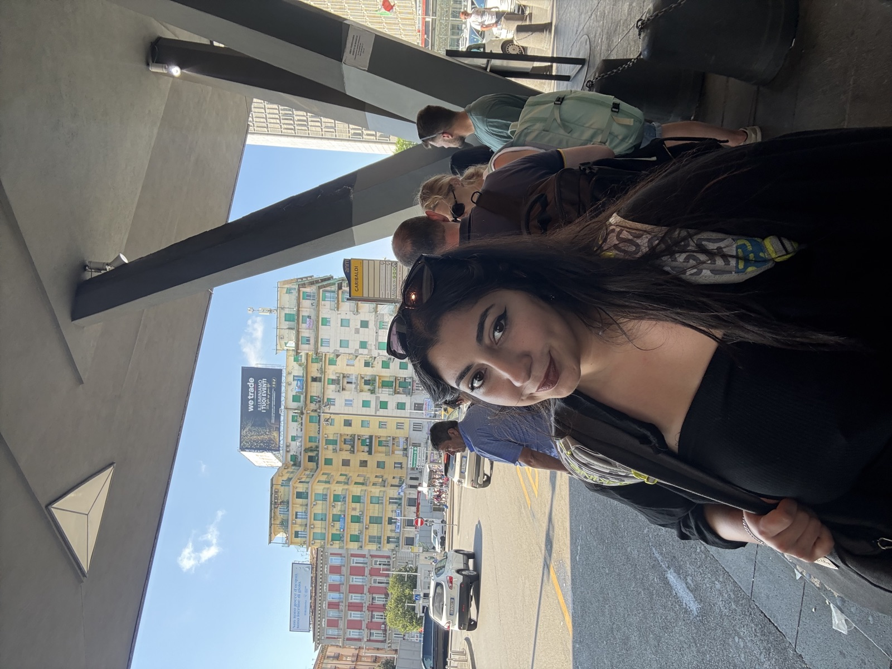
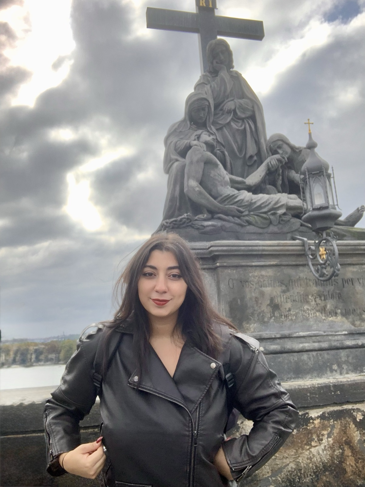
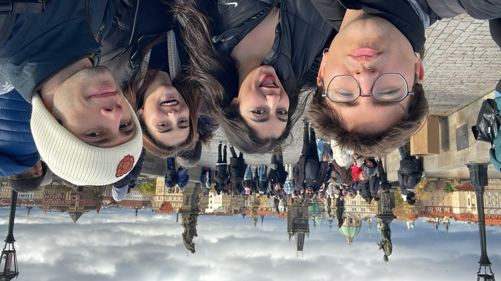
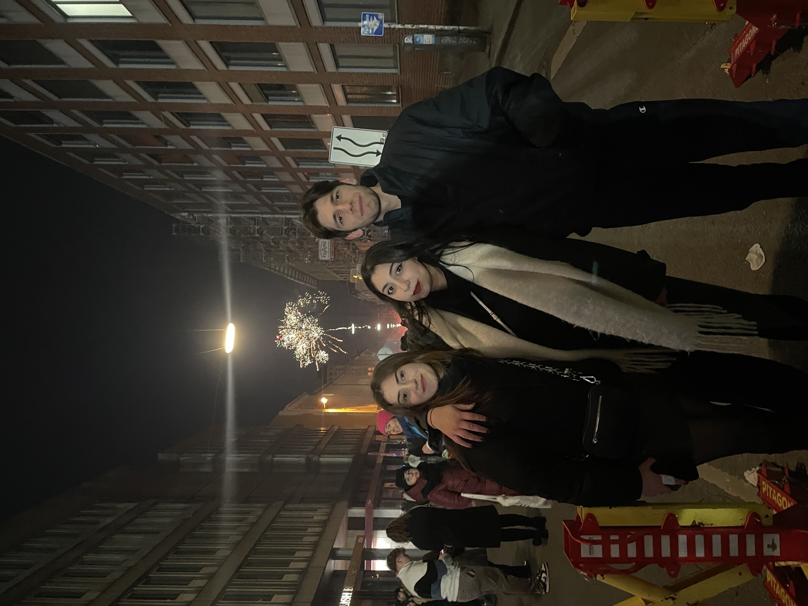
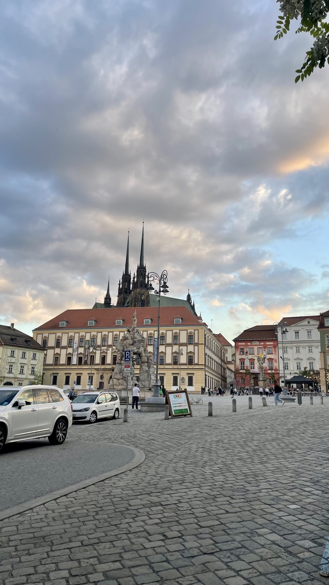
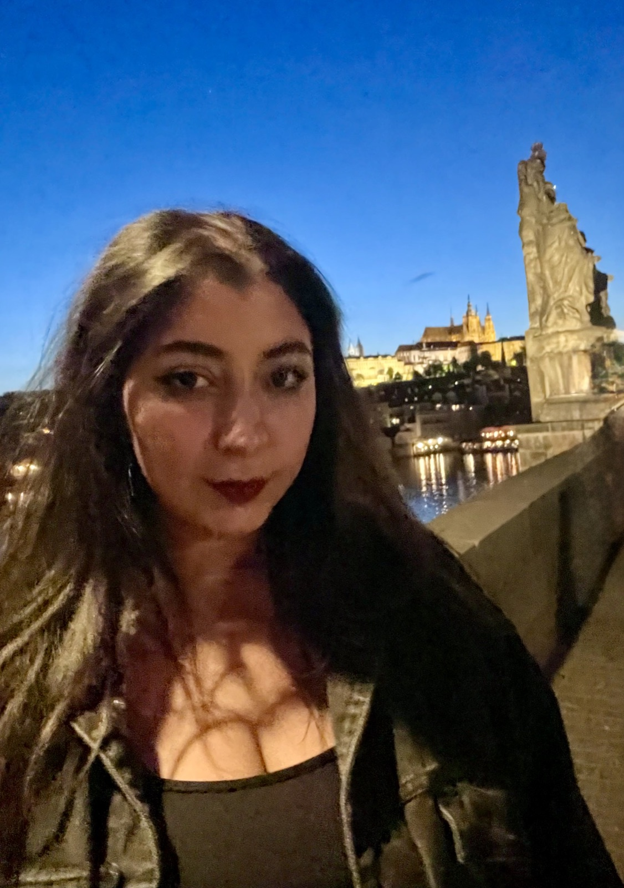
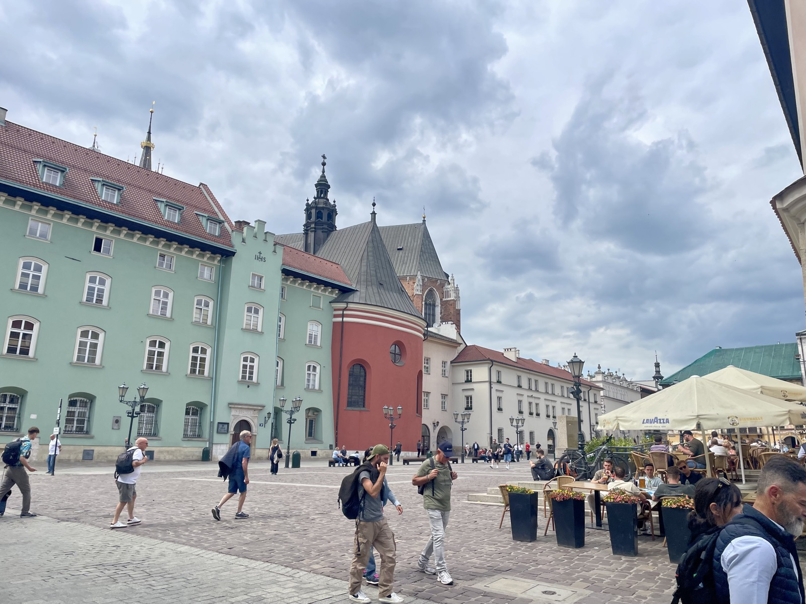
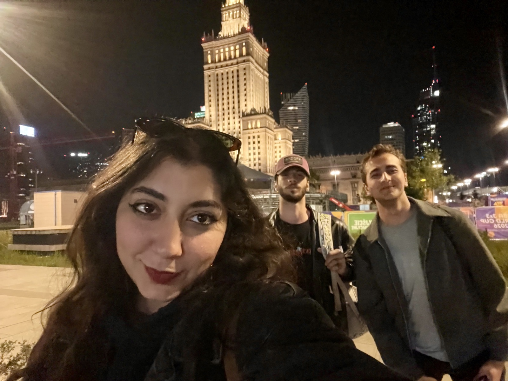
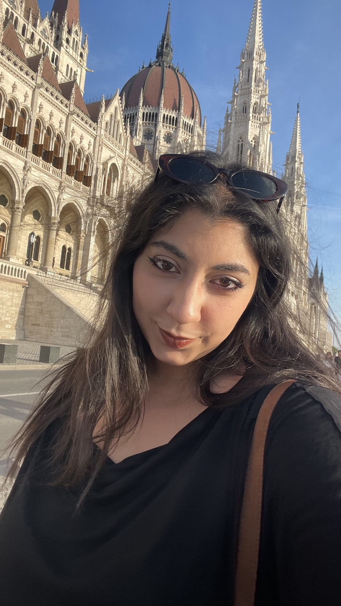

Gezilerim
Gezme tutkum, 2025 yılında annemle birlikte çıktığımız o ilk seyahatle başladı ve seyahat etmek hayatımın vazgeçilmez bir parçası haline geldi. O günden beri bazen aynı şehirlerin sokaklarına defalarca döndüm, bazen de aklımın kaldığı yerlere tekrar gitmenin hayalini kurdum. Geçtiğim her rotada, attığım her adımda harika anılar biriktirdim; şimdi de tüm bu deneyimleri burada sizlerle paylaşıyorum.
BUDAPEŞTE

Budapeşte'deki ilk deneyimimdi ve gerçekten büyüleyici bir şehir. Her ne kadar kışın gitmiş olsam da gezi olarak ilk yurtdışı deneyimi olarak mükemmel bir konum. En sevdiğim yerler arasına kesinlikle girer.
VİYANA

Votiv Kilisesi
Viyana bence oldukça güzel bir şehir ancak çok sevdiğimi söyleyemem. Ama kesinlikle uzun vakit ve para ayırılmalı ve müzeleri tek tek gezilmeli.
BRATİSLAVA

Slovak Ulusal Tiyatrosu
Çok ama çok küçük ama sevimli bir yer.
ROMA

Colosseum
Roma'yı herhangi bir yer geçebilir mi gerçekten bilmiyorum. Çok ama çok güzel, tarih dolu, mükemmel yemeklerle, çok samimi insanlarla dolu harika bir yer. Ayrıca arkadaşlarımla ilk defa yurtdışında tek başıma gezdiğim yer olduğu için de benim için çok daha değerli bir anısı var.
POTENZA § PİGNOLA

Pignola
Bu İtalyan köyü Pignola'ya bir Erasmus+ projesi ile gitmiştim ve inanılmaz eğlendiğimiz ve çok güzel vakit geçirdiğimiz için güzel köyün çektiğim tek fotoğrafı bu olmuş maalesef... Ama gerçekten büyük şehir dışında asla yaşayamam dememe rağmen sonsuza kadar bu köyde yaşayabilirim dedirtecek güzellikte bir yer. Bir daha görüşmek üzere Pignola.
NAPOLİ

Piazza Garibaldi
Napoli'de sadece birkaç saatimiz olduğu için ne uzun bir gezim ne de bir yemek yeme fırsatım oldu. Sonrasında tanıştığım tüm İtalyan arkadaşlarım Napolililer ve artık oraya tekrar gitmem kesinlikle şart.
PRAG

Erasmus sürecimdeki ilk Prag gezim
Ve hangi ülke hangi şehir olursa olsun kalbimdeki tahtın sahibi olan Prag... Çek kültürünü, yaşamını deneyimledikten sonra orada gezmek gerçekten çok büyük bir deneyim oldu benim için. Güzelliğini anlatamam bile.
VİYANA

Burggarten
Bu gezim ilk Viyana gezime kıyasla çok daha keyifliydi. Artık kendim gezmeye ve keşfetmeye alıştığım için çok daha verimli bir gezi oldu. Ayrıca bir yere tekrar gitmenin ve her gittiğinde farklı şeyler görmenin tadı çok daha başka olduğunu gördüm.
BUDAPEŞTE

Buda Kalesi
Budapeşte'ye ikinci gezimdi ve Erasmus arkadaşlarımla gitmiştim. Budapeşte'de toplam 1 hafta kalmış oldum bu süre de eklendiğinde ve bu gezimde kulaklığımı takıp uzun uzun yürüyebilmek çok huzurluydu.
PRAG

Charles Köprüsü
Arkadaşlarımın da gelişiyle artık Çekya'da lokal olarak arkadaşlarımı gezdiren kişi ben oldum. Mükemmeldi. Hem arkadaşlarımla orada olmanın hayalini aylardır kuruyorduk hem de Prag'ın altını üstüne getirmiş olduk.
PARİS

Paris
Roma kadar olmasa da beni çok etkileyen tek şehir Paris. Gerçekten çok çok çok güzel bir yer. Fransa'ya çok önyargılı bir şekilde gitmiştim herkes kötü olduğunu söylüyordu ancak bence kesinlikle mükemmel bir yer ve umarım bir gün orada bir süre yaşayabilirim.
MÜNİH

Yılbaşı gecesi
Yılbaşı için arkadaşımın Erasmus şehrine gitmek ve orada kutlamak mükemmel bir deneyim ve çok güzel bir fikirdi. Bunun hayalini kuruyorduk ve önce ben onu kendi ikinci evim olan Çekya'da ağırlarken sonra da onun ikinci evi olan Almanya'da beni ağırlaması bizim için çok değerliydi. Sadece bir gezi ya da kutlama değil biraz da başarılarımızı ve orada birbirimizin kurduğu hayatı görmüş olduk. Daha nicelerine.
MADRİD

Madrid
Bir Erasmus+ projesi öncesi Madrid'de gezme fırsatım oldu ve bir arkadaşım bana Madrid'in İspanya'nın Ankarası olduğunu ve çok seveceğimi söylemişti. Ve haklıymış. İspanya'yı çok ama çok sevdim ve Madrid kesinlikle tekrar tekrar gitmeyi çok istediğim bir şehir olacak.
VİYANA

Viyana x3
Erasmustan döndükten sonra tekrar Erasmus şehrimi görmek, arkadaşlarımı görmek ve oradaki hayatımı hatırlamak adına ve bu sefer en yakın arkadaşlarımdan birini de alarak bir geziye çıktım ve umarım hayatım hep böyle olur demeden edemeyeceğim.
BRNO

Brno'm :')
Evimden ayrılıp evime dönmüş gibi hissetmek gerçekten çok garip. Ama Brno her zaman benim bir parçam olacak. Çekya ve Brno... Moc miluju, vždy budu milovat.
PRAG

Bir Prag Akşamı
Bu sefer gerçekten hiç ama hiç dönmek istemedim. Başka bir şey söylemeyeceğim.
KRAKOW

Krakow - Old Town
Polonya gerçekten tarihini çok güzel anlatabilen bir ülke. Krakow da bu açıdan beni oldukça etkiledi.
VARŞOVA

Varşova - Old Town
Varşova çok çok güzeldi. Yemekler, sokaklar mükemmeldi. İnanılmaz zevk aldım gezmekten. Kesinlikle görülmesi gereken bir yer.
BUDAPEŞTE

Parlamento Binası
Şu ana kadar Budapeşte'de çok uzun vakit geçirmiş olsam da bu sefer haritayı açmadan, en yakın arkadaşlarımla sonuna kadar tadını çıkardım ve şu ana kadarki en huzurlu gezilerimden birisiydi. Tekrar görüşeceğiz Budapeşte.